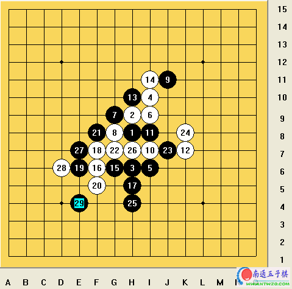
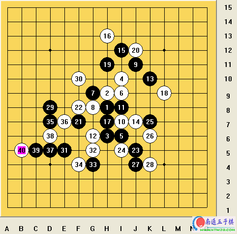
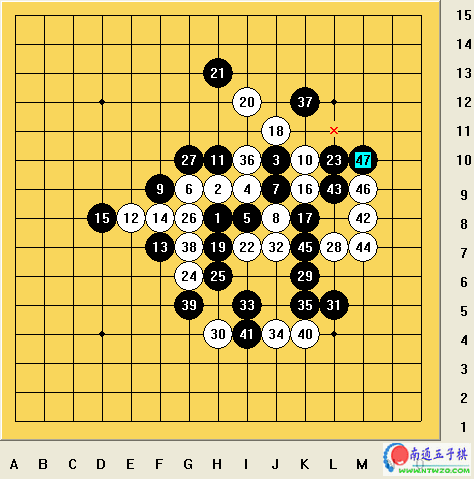
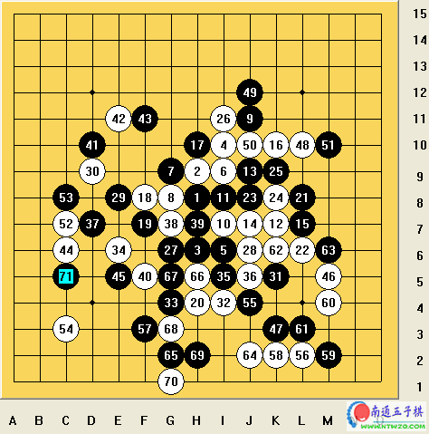
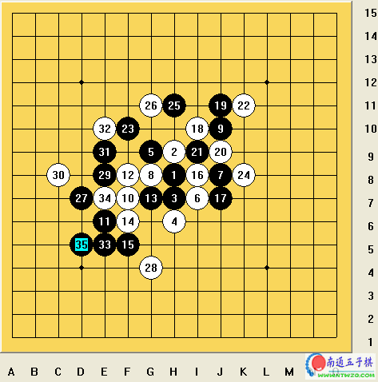
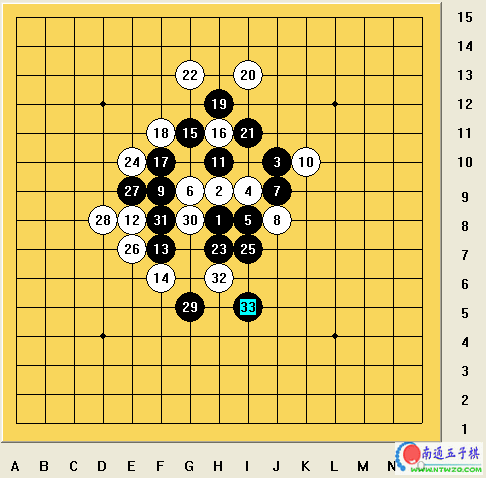
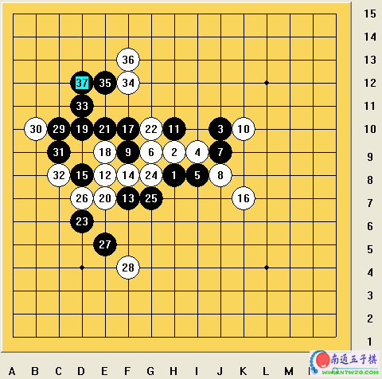
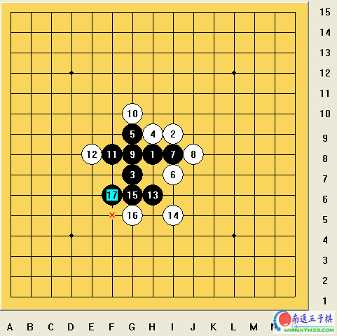
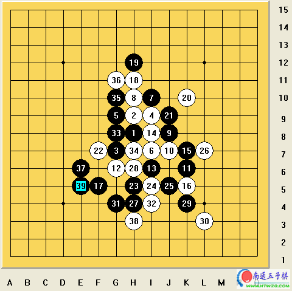

Ando Meritee在第七届世界连珠锦标赛上的11盘棋
#1 Ando Meritee在第七届世界连珠锦标赛上的11盘棋 作者：有志青年 发表时间：2006-8-9 16:09:29
在这篇文章中，我评述了第七届世界锦标赛中我的全部11盘棋。我的评价尽量简单明了，我的评述将告诉你我是如何准备我的比赛以及我在比赛中的思想和如何运用战术。比赛的尽善尽美是次要的，我不追求棋局的完美，我要使比赛迅速、简洁、富有进攻性并出人意料，在我的大部分比赛中都是这样做的。有些比赛也许不是最佳着法，但却很好地反映了我的战略思想。
第一轮 Meritee - Ishitani，1:0
我和我的台湾学生Finite一起研究过这些变化。那时，我记得，我们在黑棋的进攻中发现一些问题，但当我与Ishitani选择这个变化时，我却找不到那些问题了。所以Ishitani第14手的失误证实了我下面的分析，简单又出人意料的进攻。Ishitani没怎么想就认输了。我们这盘比赛是A组最先结束的，其他选手都还在比赛中。这盘之后，Ishitani问是否白14真的就输了，不等我回答，他就把白16挡在黑活三的另一侧，黑17不变，然后看着我，疑惑地问我黑17是否是这样走，我说是，我又补充说不管白16如何防，黑似乎都能赢。Ishitani表示同意，并说他看不到任何防守。
突然的进攻使日本人和几个A组选手都感到惊讶。

第二轮 Kim - Meritee, 0:1
金(秉允)是一个新打入A组的选手，但我在棋局中还是认真地对待他。我不想犯两年前我和张(进宇)的那个错误。能记起我和张下的那盘棋的人，他们或许记得 那盘棋我低估了对手而走出大恶手。这次不同，我平静而认真地计算着我对金的战术，我并没有随意地做对付韩国棋手的准备工作，我知道韩国连珠理论发展的主要趋势。当比赛开始走完前9手之后，金的棋路变得清晰了，显然他对定式到白16走17位、黑17走G10的变化有精心的准备。我对他棋风的结果了解不多，因此，我按很久前我给我的学生们讲的白棋的定式继续进行着我的计划。我知道，即使他明白了我的战术，他也不会走出我意料之外的奇招。白16、18、20和22都是我的定式， 黑23、25我认为很强。我对他走出的27准备不足， 因此我这时想了很长时间，并且走的十分小心，我选择了也许不是最佳的28、30、32的走法。这是第二轮的比赛，不必太冒险，我选择了有把握的计划，使得看起来白有优势。直到40手棋都很正常，这时我试图找出可靠的VCT，但我所剩时间不多了。因此，我白42有两个战术意图，首先是让他去判断在这个区域如何防守，使我赢得一些时间，能继续找我的VCT，第二个意图是如果我找不到VCT，那么我的白42能够连接两侧并带来白棋进攻区域的优势。
然而，我出乎他的意料，他避开了我白42手在这个区域的小小威胁，防在了我找VCT的区域。棋局出人意料地结束了。金下的很好，这是今年A组我下的时间最长的一盘棋。
#2 Ando Meritee在第七届世界连珠锦标赛上的11盘棋 作者：有志青年 发表时间：2006-8-9 16:19:39
第三轮 Meritee-Nara, 1:0当我看到奈良的白12手时，我立刻意识到他的意图，他要用两年前在A组对付Karlsson的变化让我感到意外。以前我见过一些日本的比赛，并且我还记得他们研究了这些变化，他指望23手走在E5点。然而，我的策略是在这盘比赛中走他们不熟的路子让对手吃惊。我知道他也希望我走中村茂的棋路(名人战中的比赛)，但我认为黑有些问题。因此我选择了守中有攻的设计。奈良是一位很强的棋手，他几乎每次都走出最佳的棋，但他挽救不了这盘棋。这盘棋证实了黑棋在这里不必使用犀利的棋风。黑棋成功的关键在于首先要平衡右侧的局面，只要可能就保留19-9的跳二。很多棋手总喜欢一有机会就把黑棋走在K9点(黑13下面)，让白棋挡在K11点，我不同意这点。我只知道当黑棋要用VCT时才走K9手，否则这只不过是浪费了黑棋的资源，破坏了对左边有用的19-9跳二。值得一提的是，23手不是我在家分析过的，而是我实战中想出的。

第四轮 Gardström - Meritee, 0:1
这是我第二次执白。不同于以前A组以及我与中村茂的比赛，我好象对棋的颜色分布很均——4轮之后两盘执黑两盘执白。以前我使黑棋的次数很多，所以人们总希望看到我使白棋。这盘开局至第16手都很正常，接下来至24手的变化很少有人知道，但没有人感到意外。黑25是可行点之一，Makarov主张黑25走在G5以后的棋形会好些，我同意这种说法，但如果是这样，以我们的分析证明，白棋会稍优，总之，我想黑25走G5不会使棋局很快结束，这需要深入地分析。在我和Gardström比赛中，我选择一个进攻型的白28手，头脑中保留了黑棋对攻的可能性。白30是本局中最漂亮的一手，Petter也同意这种说法，只有深入分析这盘棋的人才能明白这手棋的含义。从这以后，黑棋大惑不解，对攻不可能，防守好象也没希望，因为白棋已经控制了空间，他试着利用先手走出小骗招，但我还有足够的时间来平静地思考，并用白32牢牢地掌握着局势。最后比赛以白棋漂亮的进攻，抓三三禁手结束了。
(这盘棋在日本连珠社网站记录的棋谱中有一个次序错误——见白26手。)
#3 Ando Meritee在第七届世界连珠锦标赛上的11盘棋 作者：有志青年 发表时间：2006-8-9 16:34:01
第五轮 Soosõrv - Meritee, 0:1我又一次使白棋。我选择了瑞星开局流行的白12手，在这个变化中我不想太被动，因此我走出进攻型的白20一手棋，这一手远离战场的棋放慢了节奏让黑棋进攻。这一手总比20走在被动的27位要好得多。我一定要赢这盘棋，而不是和棋。然而，我必须非常小心，尽管我还没有找到胜路，但黑棋的进攻也胜不了。Ants的黑21、23、25正常，然后他27、29直接进攻，我迅速跟着进行防守。Soosõrv是一位经验丰富的棋手，他知道是他停止进攻并回过头来防守的时候了，但太晚了，他思考进攻用时太多，现在他没有足够的时间来想出精确的防守棋。时钟已经快到时了。他防守非常冷静、正确。直到最后，他败在简单的进攻之下。如果他还有更多的时间，则什么也不会发生。

第六轮 Meritee - Gaulitz, 1:0
这是我在整个比赛开始之前就知道变化和结果的一盘棋。Gaulitz在比赛中太好预测了，每个人都知道他白12会这样走，而恰好我知道这个变化的胜法。当然，25、27是黑的唯一胜法。白28之后我用了很多时间去计算胜法。我不急于猛攻，因此我仔细认真地计算着。这个进攻，除了以前在连珠教室一次课程中遇到过类似进攻的学生之外，使所有A组的棋手感到意外，在连珠教室里，中国的张(?)提出这个变化黑的进攻有一些不准确，但随后他纠正了。棋局结束后俄罗斯棋手到我这桌边，说有简单胜，他们说21走23位，23走J5位，但他们没能验证白24走在K6时黑如何胜。
我的看法是，只有白20先走在21位时，黑通过H7和J5点的进攻才能奏效。
#4 Re:Ando Meritee在第七届世界连珠锦标赛上的11盘棋 作者：有志青年 发表时间：2006-8-9 16:41:14
第七轮 Meritee - Sinyov, 1:0
这是比赛的第四天，这一天我有两盘难对付的棋，有力的竞争对手一个是Sinyov，另一个是Sushkov。更多的观众关心着比赛第四天谁在为冠军头衔而努力。人们纷纷预测说如果我能闯过第四天便能赢得整个比赛。Sinyov对我的开局感到吃惊，我不能判断出他的战术，我选择了第5手的定式，然后继续用定式应对，费力地猜测着他的计划。或许白14手？不，14手还是按定式继续。或许是18-20手，不，他选择了流行的白18手。到白24，这是在我对中村茂比赛之后Filipov的注释，或许其他俄罗斯人有同样的意见。然而，我没看到黑25手反向防守的任何原因。我在与中村茂比赛之前简单地研究过，无论如何黑有发展优势，除非现在黑必须显示不同的发展类型。
黑27和29按我的计划走。白28错，黑速胜，因为白防不住了，如果白棋对攻，黑将于K12点分断，如果白28反向防守，黑必需经过其他几手妙棋的进攻。

第八轮 Meritee - Sushkov, 1:0
整个比赛的第二盘关键对局。我知道这盘棋的重要性，当然，由于上一盘对Sinyov的棋我竭尽全力，对Sushkov的准备好。我查阅了Sushkov和Klimashin的比赛数据库记录，以及看了Gardström - Sushkov的A组比赛之后，我敢肯定他会开疏星局。那盘棋Gardström没找到任何有效对付Sushkov白16手的手段。我知道Sushkov准备再次使用他的杀手锏。我要做的就是要找出令人满意的黑棋的发展来应对这个白16手。我用了很长时间把所有能胜的变化都搜索了一遍，大约有20分钟。我微笑地告诉我自己这个分析将在以下的回合中带来胜利，我的预想恰恰成为了现实。我只用了7分钟，这应该是以往世界锦标赛上最短的思维时间之一。黑棋的进攻真的是很漂亮，走棋的顺序非常重要，Sushkov的弱点和错点在于他低估了我对非常明显的变化的准备和对策。这盘棋说明准备工作的重要性，特别是对付各种各样的对手、精明对手的棋风以及开局的选择。要让对手吃惊又不能让对手吓倒你是很重要的。每个人都知道这点，但是在真实的比赛中只有很少人真正地用上它。
#5 Ando Meritee在第七届世界连珠锦标赛上的11盘棋 作者：有志青年 发表时间：2006-8-9 16:52:38
第九轮 Meritee-Nikonov, 1:0这盘比赛之前，我已经是八连胜了，与第二名Sushkov拉开了1.5分的差距。我必须认真对待后面的比赛，保持领先地位。我一定要用胜利创造更好的记录。我精心准备了用瑞星对付Nikonov，但最后我还是决定用疏星开局。我没有时间来查看本轮之前Nikonov的比赛记录。我没有料到他的第16手，这使我感到很惊讶。我对下一手棋想了很长时间，大概超过了一个小时。我不记得正确着法了，变化很复杂，我也尝试计算了所有的结局。黑19并不起眼，但是有一定优势。他的白20比我预料的要强。我是希望在这之后我能有VCT，但我错了。 希望黑棋能助我阻止 右边 任何可能的进攻 ，我的黑23和25是很具有挑战性的，可那是错误的。之后我们的分析显示他能在右边进攻胜。胜法是十分巧妙的，排除黑切断和连续进攻之外，但仍似乎是白胜。(确实，在这盘棋之后我们没有深入地分析。) Nikonov和我在棋局中都没有看到胜利。所以很快他白26防了一手，分开了黑棋。我猜想尽管他没有看到胜利也应该在右边进攻，因为在左边防守是防不住的。

第十轮 Meritee-Lin, 1:0
当我看到他用斜月开局时，我立刻明白了他的意图，他是想黑7正招走I10，他一定不会知道很多关于黑7旧定式的变化，我决定就这么走。我看到他的白8真令我吃惊，大概他是要放弃这盘比赛吧，黑9就已经让他输了，黑棋胜的也太容易了。

第十一轮 Meritee-Karlsson, 1:0
在这一轮之前我就已经获得冠军头衔了，但谁都想要那魔术般的11连胜，他们都知道我要得到它，Stefan当然也这么认为。那时，他不知道最终前7名的名次，他不知道如果他是否需要和棋。他开斜月（丘月变斜月）明显是要和棋，从而安全进入前7名。我要在主要变化中理解他的意图，所以我不做任何改变，只是沿着下面的主要路线走。他果断地走出另一种白8手。在连珠教室中我教过优势的黑9(G8点)，但它对这种进攻型的棋不是正确的时候和正确的位置，黑9、11我选择了10年前在苏联青年锦标赛上我用来对付Ilyin的变化。我也许是稍有疏忽，因为我让他的白18获得主动，我猜想出于安全原因我应该掌握住节奏，但一切又再次平静下来，黑棋继续进攻。黑25之后以后已经防不住了。我终于取得11连胜，而Nikonov输给奈良后，Karlsson也为得到第6名而感到满足了。
